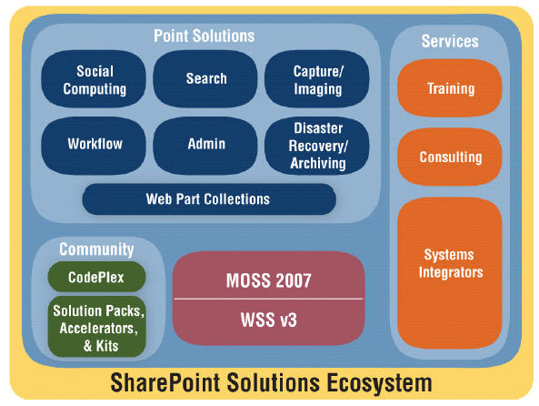

A platform that provides certain OOTB capabilities:
The messy result of product merge between 1999-2003. It improved greatly with 2010 version (2012 version pending)
SP originated for intranets, and provides collaboration tools such as: sites, lists and libraries and search.
SP for intranets is typically heavily customised & extended via commercial or bespoke widgets in the form of web parts
Many organisations use SP for their intranet, so they try to leverage SP for their .com (inheriting all the customisations they have done, which act as ball and chain for .com development)
A lot of extra work is needed to 'bend' an intranet focused system, to support the functions & look and feel of a public facing site
A better approach is to use a different CMS for .com which uses SP if required to integrate with centrally managed content
Many organisations outsource their SP environments to third parties. These can be operate identical as with on-premise environments
OR
SP can be hosted on a platform as a service offering from Microsoft. Office 365 comes in a few flavours, all of which are different from an 'on-premise' install in terms of flexibility, constraints and even what is feasible
SP spawns a big ecosystems of vendors offering plugins, templates, modules and connectors with other systems.
